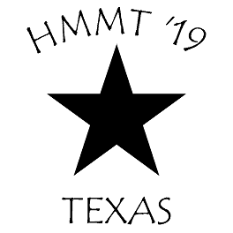

Texas HMMT November Team

The Texas HMMT November Team, organized by the Austin Math Circle,
competes at the Harvard-MIT Math Tournament (HMMT) each November.
The team was founded by Jay Leeds of the Austin Math Circle and is currently coached
by Matthew Kroesche.
This year's contest will be held online on November 13th, 2021.
FAQ
Results from previous years
2019
2018
2017
(Back to Matthew Kroesche's Home Page)